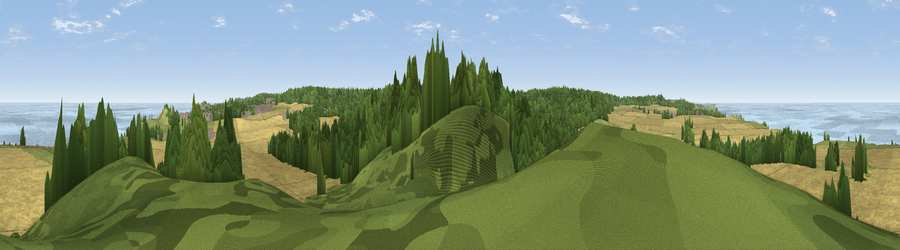

Viewpoint near Upper Sheringham
#9667 in England · top 9% of its area beats it · near Upper SheringhamWhere it is
The exact computed spot (TG 13375 42775). Click the marker for map links.
The view, rendered

A 360° render of this exact spot computed from the terrain model, tree cover and land cover — summer colours, afternoon light, calibrated against photographs of famous viewpoints. Real trees, hedges and buildings will differ in detail.
The panorama
Grey silhouette: terrain skyline in each direction (720 bearings, Earth curvature and refraction included). Dashed green: skyline with trees (+15 m) and buildings (+8 m) as obstacles. Blue strip: how far the ground is visible on each bearing.
Where the view opens
Wedge length = distance to the farthest visible ground on that bearing (vegetation-aware). Rings at 10, 25 and 50 km.
What fills the view
51% cropland · 28% woodland · 11% water · 9% grassland ·
Angular shares of the visible panorama (visual magnitude), not map area. Landscape diversity 0.52 (0–1 Shannon).
Key numbers
More beautiful places nearby
The staircase of upgrades: each row has a higher view potential than everything closer. Driving times are estimates from straight-line distance, calibrated against real road routing — check an actual route before setting out.
| Place | Direction | Drive | Score |
|---|---|---|---|
| Viewpoint near Weybourne | W · 3 km | ~8 min | 68.3 |
| Viewpoint near Claxby | WNW · 114 km | ~139 min | 71.5 |
| Viewpoint near Bempton | NNW · 161 km | ~183 min | 72.8 |
| Viewpoint near Speeton | NNW · 163 km | ~185 min | 74.4 |
| Viewpoint near Woodhouse Eaves | W · 164 km | ~186 min | 77.7 |
| Viewpoint near Speeton | NW · 165 km | ~186 min | 80.0 |
| Olivers Mount | NW · 181 km | ~201 min | 80.3 |
| Viewpoint near Ravenscar | NNW · 195 km | ~214 min | 82.7 |
52.93993, 1.17396 · source: screening · position refined by local search. Computed location — check access rights before visiting.